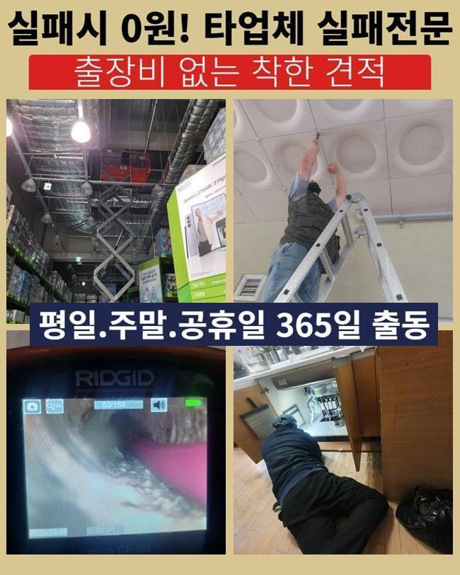
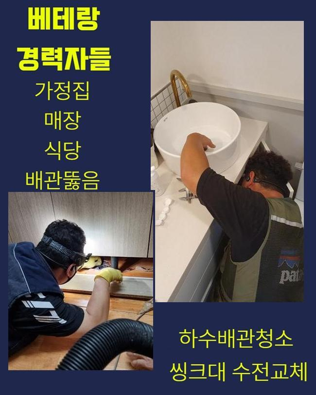
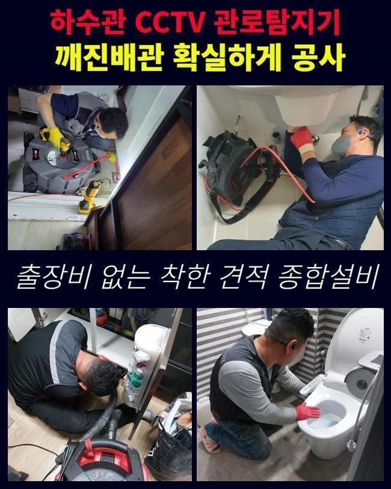
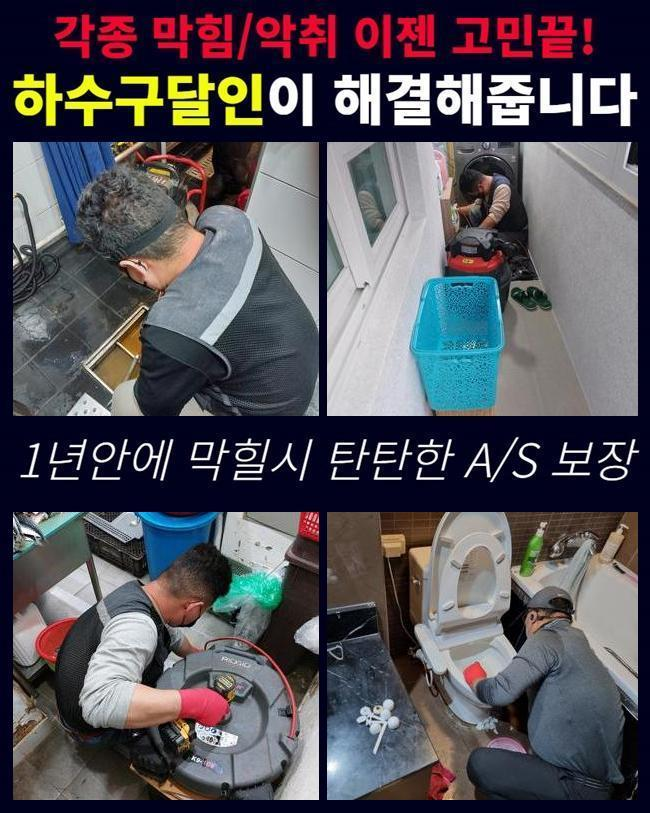
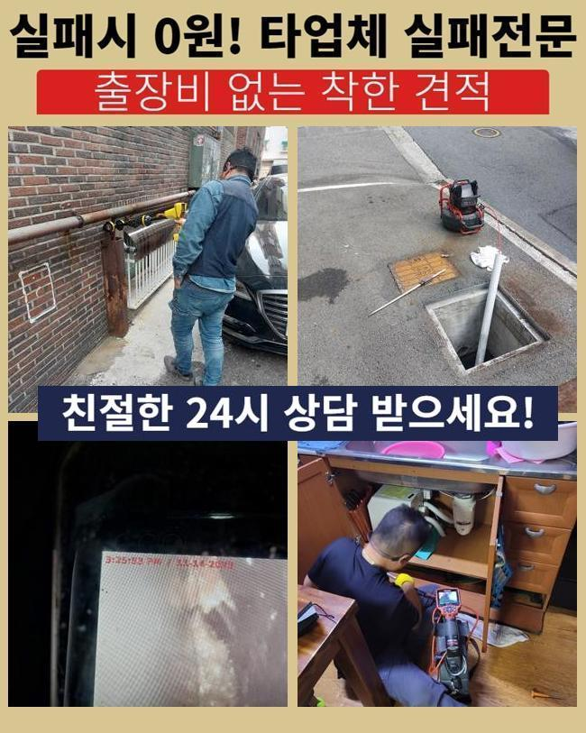
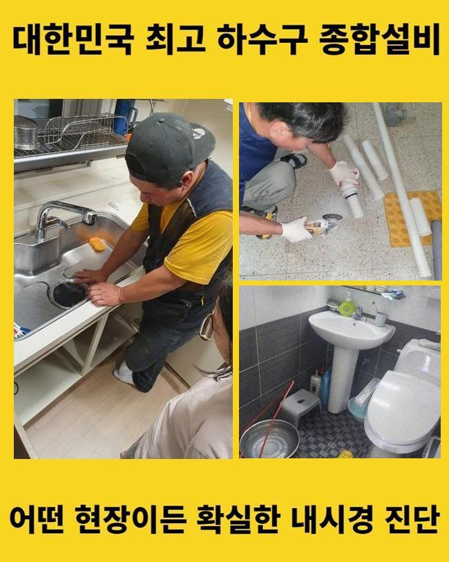

🏠 파주 목동동욕실뚫음 군내면 집수정청소 설비
파주 목동 하수구막힘 전문 시공 후기

📋 작업 개요
- 위치: 파주 목동, 목동, 파주
- 서비스 유형: 하수구막힘, 배관막힘, 집수정막힘, 역류해결, 뚫는업체, 배관청소, 고압세척, 배관보수
- 작업 일시: 2025. 5. 28. 0:02
- 업체명: 하수구수사대 (010-5615-2118)
🔍 문제 상황
파주 목동동욕실뚫음 군내면 집수정청소 설비
화장실 아래의 배수구 망 아래로 지속적으로 냄새와 물이 겉으로 치솟는 문제로 고통받으시다가 수선을 맡겨주신 케이스를 소개하려 합니다
통계적으로 보았을 때 여러 실내 장소들 중 높은 확률로 중단이 되어버리는 곳이 부엌 안이라거나 욕실이 아닐까 싶은데요
주방 구조 안에서 막혀버리는 사유를 보면 음식물에 녹아있는 슬러지가 생겨버리는 상황이 많은 편입니다
욕실 바닥 아래의 막힌 원인을 알아보면 기름때는 기본이고 딱딱한 석회물질과 신체의 털이 결합된 채 고여있어요
고객님께서도 저희들에게 전화주시기 전에는 스스로 뚫을 수 있다는 도구를 들여보내서 물이 트이도록 애쓰셨을 텐데요
말씀을 해주셨는데 압력을 가하는 소소한 도구부터 액상 청소제도 부으며 여러 차례 도전했는데 아예 개선될 징후도 없었고 물이 넘치는 속도가 더 악화됐다고 하셨습니다
이와 같이 물의 역행 사태가 불변으로 나타나고 심지어는 시도때도 없이 역류가 되면 높은 확률로 내부의 막힌 수준이 심화된 것이므로 빠르게 안의 노폐물을 전문진의 노하우를 기반으로 제거하는 적극적 행동이 필요합니다
처음부터 막힘을 원활히 처단해야만 재막힘이 다시금 일어나지 않으니 촬영 장치를 넣어서 맞춤형 검사를 하고 최선의 방책을 찾아 하수구 세척 절차에 접근하고 있어요
막혀있는 대상물이나 배관 노후화 정도에 따라서도 최상의 솔루션이 변화할 수 있으므로 배관 조사 절차에 전념하려 합니다

🔎 원인 분석
💡 전문가 진단: 정밀 진단 장비를 사용하여 슬러지의 고착 여부를 판명하고 타격/세척 작업을 실시했습니다.
욕실의 배수구 뚜껑을 조심스레 빼내고 내부 필터도 빼서 옆에 보관하고 노출된 구멍 내에 촬영을 위한 내시경을 넣어 내부 스캔을 집중적으로 하기로 정하고 행동에 옮겼어요
내시경이 가로막히는 문제를 수습하기 위하여 상단 부분에 축적된 하수를 석션 기능으로 빨아당겨 주었습니다
나온 물질들을 봤는데 소량의 찌꺼기들과 물만 끌어올려지고 굵직한 입자는 처리되지 않았더라고요
이로써 확실히 내부에서 다양한 이물질들이 합체된 모양새로 고정된 상황일거라 추정이 됐습니다
얼른 배수구의 깊이에 카메라를 배치했음에도 스크린으로는 상황이 보이지 않았습니다
시야가 캄캄하고 희뿌연 모습으로 미뤄봤을 때 벽체의 찌꺼기가 막대하단 점을 지레짐작 할 수 있었어요
이정도로 진행되기까지는 상당히 오랜 시간을 보내며 쭉 저장된 듯 보였습니다
진입로 확보를 효과좋게 처리하고자 샤프트의 힘을 빌려서 떡 하니 자리한 이물질을 쪼개주기로 했습니다
화석처럼 굳은 물질이나 엉겨붙은 대상을 소규모의 입자로 나눠서 없애는 기능을 봤을 때는 비교 불가로 우수합니다
사태를 파악했을 때 과하게 밀착이 되지 않은 장애물만 자리하고 있다면 오직 석션의 활약으로도 진압이 될 수 있습니다
병원같은 곳에서 마주하곤 했었던 석션기와 원리는 같지만 산업 석션의 경우는 내부에 자리하고 있는 미세한 이물질들을 흡수하는 것에 특장점을 갖고 있어요

🔧 작업 과정
찌꺼기의 규격이 일정 수준 이상으로 크면 노즐을 통과하지 못하며 내려가지도 못하니 강력한 파워로 거대한 크기를 잘게 해체작업을 해주는 작업에 들어가야 하는데 이때 활약하는 게 플렉스샤프트 도구입니다
통로를 떡하니 막아선 노폐물을 타겟으로 충격을 주면서 진동하기 때문에 아무리 센 고착물이라도 문제없이 부숴주기에 내부를 정화해줍니다
가늘면서 기다란 노즐이 붙어있는데 끝부분에는 노커가 장착돼서 신속하게 회전하기에 견고한 덩어리도 분쇄하는 것을 가능케 합니다
스케일링만 반복하는 게 아니라 석션도 번갈아 활용해요
완성도 높게 하수도의 장애를 치워주고자 작업을 하는 도중에 내용물을 끌어올려가며 여기저기 확산된 찌꺼기를 수습해요
두 작업을 병행한 뒤 내시경기를 넣어서 미처 처리되지 못한 분량이 없는지 검사합니다
이렇게 석션작업을 하는 이유가 있다면 놔둘 경우에는 작은 조각들이 다시 결합하고 자리를 잡고서 물막힘을 다시 만들게 되니 제대로 밖으로 꺼내 폐기처분해야 합니다
전체적인 배관을 보며 빠지는 곳 없이 업무를 해주려고 하며 배관의 유지보수 작업을 자꾸 신청하긴 어려우니 물 흐름이 다시 끊기거나 유속이 느려지는 것을 사전에 처단하고자 확실히 제거하려 합니다
이따금씩 전문가가 배관 정화를 해주면 한동안은 편안하고 막힘에 의한 고충 없이 사용할 수 있게 되니 작은 부분이라도 놓치지 않고 숨어있는 모든 불순물들을 삭제해주었습니다
계속해서 현장을 보셨던 고객분께서도 이토록 방대한 분량이 배수로에서 나올 줄 몰랐다며 반응을 보여주셨습니다
하수구 청소를 한 뒤에 대단한 양이 수집됐을 때는 충격받은 표정을 지으시며 놀란 반응을 보여주세요
하루에도 몇 번 이상 활용하는 화장실 바닥으로 흘러가는 이물질의 규모가 굉장히 많다는 걸 인식할 수 있습니다
마음이 답답하게 쌓여버린 불순물을 죄다 분리시키고 파편이 된 이물질도 처리한 후에 최종적으로 배관 세척이 끝나게 되었습니다
여러 현장을 방문해보면 절반 이상의 고객들은 초기가 한참 지나서 전화를 걸어주시는데요
물이 어느정도 흘러갈 시점에 인지하고 행동으로 옮겼다면 비교적 신속하게 나아졌을 것입니다
청소가 끝나고 나서는 기름을 방지하는 온수를 붓거나 필터를 씌우는 방법으로 재발을 늦출 수 있습니다
위생에 신경쓰며 쓰더라도 소량의 찌꺼기도 시간이 가면 뭉쳐버릴 수 있으므로 정기적인 전문 세척을 의뢰하시는 게 좋아요


✅ 작업 완료
막힌 곳이 풀리지 못하면 하수의 역류 이슈까지 설상가상으로 생기며 보다 풀기 힘든 사태가 조성될 위험이 있어요
깊숙한 곳에서 부패됐던 하수가 바깥 쪽으로 역행하면 엄청난 악취까지 퍼져나가는 쾌적하지 못한 실내환경이 되어버려요
더 복잡한 과제가 되어버리기 전에 정비 및 시공을 해서 편안하고 안락한 환경을 구축해야 할 것입니다
저희에게 전화주신다면 스케줄을 빠르게 정한 뒤에 문제성 배수관을 수선하러 찾아뵙도록 하겠습니다
아니면 고객님께서 바라고 계시는 특정 시간이 있으면 요구에 부합하는 날짜에 시공을 착수해드릴 수도 있으니 편안한 마음을 갖고 접수해 주세요!



⚠️ 하수구 배관 막힘 예방 및 관리 가이드
- ✅ 머리카락, 비닐, 물티슈 등 물에 분해되지 않는 이물질은 하수구 유입을 절대 금지해 주세요.
- ✅ 하수구 거름망을 씌우고 모여진 이물질은 주기적으로 쓰레기통에 바로 비워주셔야 합니다.
- ✅ 배관 노후가 심할 경우 이물질이 더 쉽게 걸리므로 주기적인 배관 세척(고압세척 등)을 권장합니다.
- ✅ 작업 후 1년 이내 재발 시 하수구수사대에서 무상 A/S 보증 서비스를 제공합니다.
💡 핵심 정리
- 확실한 장비 작업(내시경 점검 및 샤프트 스케일링)으로 원인을 뿌리 뽑습니다.
- 작업 후 1년 이내에 동일한 부위 재발 시 100% 무상 A/S 서비스를 보장합니다.
- 서울 · 경기 · 인천 전 지역에 24시간 언제든 긴급 출동할 수 있도록 항시 대기 중입니다.
❓ 자주 묻는 질문 (FAQ)
🚨 파주 목동 하수구막힘 문제로 고민이신가요?
정확한 원인 진단과 확실한 시공으로 재발 없는 해결을 약속드립니다.
24시간 긴급 출동 | 서울 · 경기 · 인천 전지역 | 1년 내 재발 시 무상 A/S